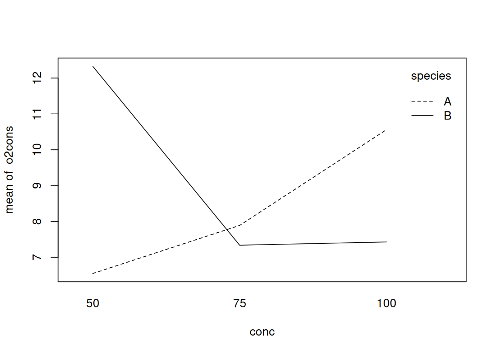

12 ANOVA à critères multiples : plans factoriels et hiérarchiques
Après avoir complété cet exercice de laboratoire, vous devriez être capable de:
- Utiliser R pour faire une ANOVA paramétrique d’un plan factoriel avec deux facteurs de classification et réplication
- Utiliser R pour faire une ANOVA paramétrique d’un plan factoriel avec deux facteurs de classification sans réplication
- Utiliser R pour faire une ANOVA paramétrique d’un plan hiérarchique avec réplication
- Utiliser R pour faire une ANOVA non paramétrique avec deux facteurs de classification
- Utiliser R pour faire des comparaisons multiples
Il existe une très grande variété de plans (designs) d’ANOVA que R peut analyser. Cet exercice n’est qu’une introduction aux plans les plus communs.
12.1 Paquets et données requises pour le labo
Ce laboratoire nécessite:
- les paquets R:
- multicomp
- car
- tidyverse
- les fichiers de données
- Stu2wdat.csv
- Stu2mdat.csv
- nr2wdat.csv
- nestdat.csv
- wmcdat2.csv
- wmc2dat2.csv
12.2 Plan factoriel à deux facteurs de classification et réplication
Il est fréquent de vouloir analyser l’effet de plusieurs facteurs simultanément. L’ANOVA factorielle à deux critères de classification permet d’examiner deux facteurs à la fois, mais la même approche peut être utilisée pour 3, 4 ou même 5 facteurs quoique l’interprétation des résultats devienne beaucoup plus complexe.
Supposons que vous êtes intéressés par l’effet de deux facteurs : site (location, Cumberland House ou The Pas) et sexe (sex, mâle ou femelle) sur la taille des esturgeons. Comme l’effectif n’est pas le même pour tous les groupes, c’est un plan qui n’est pas balancé. Notez aussi qu’il y a des valeurs manquantes pour certaines variables, ce qui veut dire que chaque mesure n’a pas été effectuée sur chaque poisson.
12.2.1 ANOVA à effets fixes
- Examinez d’abord les données en faisant des box plots de rdwght pour sex et location des données du fichier
Stu2wdat.csv.
Stu2wdat <- read.csv("data/Stu2wdat.csv")
ggplot(Stu2wdat, aes(x = sex, y = rdwght)) +
geom_boxplot(notch = TRUE) +
facet_grid(~location)Warning: Removed 4 rows containing non-finite outside the scale range
(`stat_boxplot()`).Les graphiques montrent qu’aux deux sites les femelles sont probablement plus grandes que les mâles, mais que les tailles ne varient pas beaucoup d’un site à l’autre. La présence de valeurs extrêmes sur ces graphiques suggère qu’il y aura peut-être des problèmes avec la condition de normalité des résidus.
- Générez les statistiques sommaires pour RDWGHT par sex et Location.
Stu2wdat %>%
group_by(sex, location) %>%
summarise(
mean = mean(rdwght, na.rm = TRUE), sd = sd(rdwght, na.rm = TRUE), n = n()
)`summarise()` has grouped output by 'sex'. You can override using the `.groups`
argument.# A tibble: 4 × 5
# Groups: sex [2]
sex location mean sd n
<chr> <chr> <dbl> <dbl> <int>
1 "FEMALE " "CUMBERLAND " 27.4 9.33 51
2 "FEMALE " "THE_PAS " 28.0 12.5 55
3 "MALE " "CUMBERLAND " 22.1 4.79 34
4 "MALE " "THE_PAS " 20.6 9.92 46Ces résultats supportent l’interprétation des box plots: Les femelles sont plus grosses que les mâles, et la différence de taille entre les deuxsites sont petites.
- À l’aide du fichier Stu2wdat.csv faites une ANOVA factorielle à deux critères de classification:
# Fit anova model and plot residual diagnostics
# but first, save current graphic parameters
opar <- par()
anova.model1 <- lm(rdwght ~ sex + location + sex:location,
contrasts = list(sex = contr.sum, location = contr.sum),
data = Stu2wdat
)
anova(anova.model1)Analysis of Variance Table
Response: rdwght
Df Sum Sq Mean Sq F value Pr(>F)
sex 1 1839.6 1839.55 18.6785 2.569e-05 ***
location 1 4.3 4.26 0.0433 0.8355
sex:location 1 48.7 48.69 0.4944 0.4829
Residuals 178 17530.4 98.49
---
Signif. codes: 0 '***' 0.001 '**' 0.01 '*' 0.05 '.' 0.1 ' ' 1Attention, R imprime les sommes des carrés séquentielles (Type I) les carrés moyens et probabilités associés. Vous ne pouvez pas vous y fier si votre plan d’expérience n’est pas parfaitement balancé. Dans cet exemple, le nombre de poissons capturés change selon le site et le sexe et le plan d’expérience n’est donc pas balancé.
Vous devez extraire les sommes de carrés partielles (Type III). Le moyen le plus simple que j’ai trouvé est d’utiliser la fonction Anova()du package car (notez la différence subtile, Anova() n’est pas la même chose que anova(), R est impitoyable et distingue les majuscules des minuscules). Malheureusement, Anova() ne suffit pas; il faut également spécifier le type de contraste dans le modèle avecl’argument contrasts = list(sex = contr.sum,location = contr.sum)
Anova Table (Type III tests)
Response: rdwght
Sum Sq Df F value Pr(>F)
(Intercept) 106507 1 1081.4552 < 2.2e-16 ***
sex 1745 1 17.7220 4.051e-05 ***
location 9 1 0.0891 0.7656
sex:location 49 1 0.4944 0.4829
Residuals 17530 178
---
Signif. codes: 0 '***' 0.001 '**' 0.01 '*' 0.05 '.' 0.1 ' ' 1Suite à l’ANOVA, on accepte deux hypothèses nulles: (1) que l’effet du sexe ne varie pas entre les sites (pas d’interaction significative) et (2) qu’il n’y a pas de différence de taille des esturgeons (peu importe le sexe) entre les deux sites. D’un autre coté, on rejette l’hypothèse nulle qu’il n’y a pas de différence de taille entre les esturgeons mâles et les femelles, tel que suggéré par les graphiques.
Cependant, on ne peut se fier à ces résultats sans vérifier si les conditions d’application de l’ANOVA étaient remplies. Un examen des graphiques des résidus, en haut, montre que les résidus semblent être distribués plus ou moins normalement, si ce n’est des 3 valeurs extrêmes qui sont notées sur le diagramme de probabilité (cas 101, 24,& 71). D’après le graphique des résidus vs les valeurs prédites, on voit que l’étendue des résidus est plus ou moins égale pour les valeurs estimées, sauf encore pour 2 ou 3 cas. Si on éprouve la normalité, on obtient:
shapiro.test(residuals(anova.model1))
Shapiro-Wilk normality test
data: residuals(anova.model1)
W = 0.87213, p-value = 2.619e-11Alors, il y a évidence que les résidus ne sont pas distribués normalement.
Nous allons utiliser le test de Levene pour examiner l’homoscédasticité des résidus, de la même façon qu’on a fait pour l’ANOVA à un critère de classification.
library(car)
leveneTest(rdwght ~ sex * location, data = Stu2wdat)Levene's Test for Homogeneity of Variance (center = median)
Df F value Pr(>F)
group 3 3.8526 0.01055 *
178
---
Signif. codes: 0 '***' 0.001 '**' 0.01 '*' 0.05 '.' 0.1 ' ' 1Si les résidus étaient homoscédastiques, on accepterait l’hypothèse nulle que le absres moyen ne varie pas entre les niveaux de sexe et location (i.e., sexloc). Le tableau d’ANOVA ci-dessus montre que l’hypothèse est rejetée. Il y a donc évidence d’hétéroscédasticité. En bref, nous avons donc plusieurs conditions d’application qui ne sont pas respectées. La question qui reste est: ces violations sont-elles suffisantes pour invalider nos conclusions ?
Répétez la même analyse avec les données du fichier stu2mdat.csv . Que concluez-vous? Supposons que vous vouliez comparer la taille des mâles et des femelles. Comment cette comparaison diffère entre les deux ensembles de données ?
Call:
lm(formula = rdwght ~ sex + location + sex:location, data = Stu2mdat,
contrasts = list(sex = contr.sum, location = contr.sum))
Residuals:
Min 1Q Median 3Q Max
-15.917 -6.017 -0.580 4.445 65.743
Coefficients:
Estimate Std. Error t value Pr(>|t|)
(Intercept) 24.5346 0.7461 32.885 < 2e-16 ***
sex1 -0.5246 0.7461 -0.703 0.483
location1 0.2227 0.7461 0.299 0.766
sex1:location1 3.1407 0.7461 4.210 4.05e-05 ***
---
Signif. codes: 0 '***' 0.001 '**' 0.01 '*' 0.05 '.' 0.1 ' ' 1
Residual standard error: 9.924 on 178 degrees of freedom
(4 observations deleted due to missingness)
Multiple R-squared: 0.09744, Adjusted R-squared: 0.08223
F-statistic: 6.405 on 3 and 178 DF, p-value: 0.0003817Notez que cette fois les femelles sont plus grandes que les mâles à Cumberland House, mais que c’est le contraire à The Pas. Quel est le résultat de l’ANOVA (n’oubliez pas qu’il faut des Type III sums of squares pour les résultats)?
Anova Table (Type III tests)
Response: rdwght
Sum Sq Df F value Pr(>F)
(Intercept) 106507 1 1081.4552 < 2.2e-16 ***
sex 49 1 0.4944 0.4829
location 9 1 0.0891 0.7656
sex:location 1745 1 17.7220 4.051e-05 ***
Residuals 17530 178
---
Signif. codes: 0 '***' 0.001 '**' 0.01 '*' 0.05 '.' 0.1 ' ' 1Dans ce cas, le terme de l’interaction (sex:location) est maintenant significatif mais les effets principaux ne le sont pas.
- Vous trouverez utile ici de créer des graphiques pour les deux fichiers de données pour comparer les interactions entre sex et location. Le graphique d’interaction montre les relations entre les moyennes de chaque combinaison de facteurs (appelées aussi les moyennes des ce$lules).Générez un graphique illustrant les intéractions en utilisant la fonction allEffects du package effects :
library(effects)
allEffects(anova.model1) model: rdwght ~ sex + location + sex:location
sex*location effect
location
sex CUMBERLAND THE_PAS
FEMALE 27.37347 27.97717
MALE 22.14118 20.64652plot(allEffects(anova.model1), "sex:location")allEffects(anova.model2) model: rdwght ~ sex + location + sex:location
sex*location effect
location
sex CUMBERLAND THE_PAS
FEMALE 27.37347 20.64652
MALE 22.14118 27.97717plot(allEffects(anova.model2), "sex:location")Il y a une différence importante entre les résultats obtenus avec stu2wdat et stu2mdat. Dans le premier cas, puisqu’il n’y a pas d’interaction, on peut regrouper les données des deux niveaux d’un facteur (le site, par exemple) pour éprouver l’hypothèse d’un effet de l’autre facteur (le sexe). En fait, si on fait cela et que l’on calcule une ANOVA à un critère de classification (sex), on obtient:
Anova Table (Type III tests)
Response: rdwght
Sum Sq Df F value Pr(>F)
(Intercept) 78191 1 800.440 < 2.2e-16 ***
sex 1840 1 18.831 2.377e-05 ***
Residuals 17583 180
---
Signif. codes: 0 '***' 0.001 '**' 0.01 '*' 0.05 '.' 0.1 ' ' 1Notez que la somme des carrés des résidus (17583) est presque égale à celle du modèle complet (17530) de l’ANOVA factorielle à deux facteurs. C’est parce que dans cette anova factorielle, le terme d’interaction et le terme représentant l’effet du site n’expliquent qu’une partie infime de la variabilité. D’un autre coté, si on essaie le même truc avec stu2mdat, on obtient:
Anova Table (Type III tests)
Response: rdwght
Sum Sq Df F value Pr(>F)
(Intercept) 55251 1 515.0435 <2e-16 ***
sex 113 1 1.0571 0.3053
Residuals 19309 180
---
Signif. codes: 0 '***' 0.001 '**' 0.01 '*' 0.05 '.' 0.1 ' ' 1Ici la somme des carrées des résidus (19309) est beaucoup plus grande que celle de l’ANOVA factorielle (175306) parce qu’une partie importante de la variabilité expliquée par le modèle est associée à l’interaction. Notez que si on n’avait fait que cette analyse, on conclurait que les esturgeons mâles et femelles ont la même taille. Mais en fait leur taille diffère; seulement la différence est à l’avantage des mâles à un site et à l’avantage des femelles à l’autre. Il est donc délicat d’interpréter l’effet principal (sexe) en présence d’une interaction significative…
12.2.2 ANOVA à effets mixtes
Les analyses qui précèdent négligent un point important: location pourrait être traité comme un facteur aléatoire et sex est fixe. Par conséquent le modèle approprié d’ANOVA est de type mixte.
Notez que dans toutes les analyses qui précèdent, R a traité cette ANOVA comme si elle etait de type effet fixe seulement, et les termes principaux et celui d’interaction ont été testés en utilisant le carré moyen des résidus comme dénominateur des tests de F. Cependant, pour une ANOVA de type mixte, ces effets devraient être testés en utilisant le carré moyen du terme d’interaction, ou en combinant la somme des carrés de l’erreur et de l’interaction (selon le statisticien consulté!).
En utilisant Stu2wdat, refaites un tableau d’ANOVA pour RDWGHT en considérant location comme facteur aléatoire et sex comme un facteur fixe. Pour ce faire, vous devrez recalculer les valeurs de F pour sex et location en utilisant le carré moyen de l’interaction sex:location au lieu du carré moyen des résidus comme dénominateur. Le mieux c’est de le faire à la mitaine ent travaillant avec les Type III Sums of squares du tableau d’ANOVA.
Anova(anova.model1, type = 3)Anova Table (Type III tests)
Response: rdwght
Sum Sq Df F value Pr(>F)
(Intercept) 106507 1 1081.4552 < 2.2e-16 ***
sex 1745 1 17.7220 4.051e-05 ***
location 9 1 0.0891 0.7656
sex:location 49 1 0.4944 0.4829
Residuals 17530 178
---
Signif. codes: 0 '***' 0.001 '**' 0.01 '*' 0.05 '.' 0.1 ' ' 1Pour sex, la nouvelle valeur de F (le rapport des carrés moyens) est de
\[F = \frac{(1745/1)}{(49/1)} = 35.6\]
Pour obtenir la valeur de p correspondant à cette statistique F, il faut utilisez la fonction de probabilité de la distribtuion de F pf(F, df1, df2, lower.tail = FALSE), où F est la valeur de F calculée, et df1 et df2 sont les degrés de liberté du numérateur (sex) et dénominateur(SEX:location).
pf(35.6, 1, 1, lower.tail = FALSE)[1] 0.1057152Notez que maintenant la valeur de p pour sex n’est plus significative. C’est parce que le carré moyen de l’erreur dans l’ANOVA initiale est plus petit que celui associé à l’interaction, mais surtout parce que le nombre de degrés de liberté pour le dénominateur du test de F est passé de 178 à 1 seulement. En général, c’est beaucoup plus difficile d’obtenir des résultats significatifs quand les degrés de liberté pour le dénominateur sont petits.
Les modèles mixtes qui sont une généralisation de l’ANOVA à effets mixtes sont maintenant extrêmement bien développé et sont à favoriser lors d’analyse incluant des effets dit aléatoires.
12.3 Plan factoriel à deux facteurs de classification sans réplication
Dans certains plans d’expérience il n’y a pas de réplicats pour chaque combinaison de facteurs, par exemple parce qu’il serait trop coûteux de faire plus d’une observation. L’ANOVA à deux critères de classification est quand même possible dans ces circonstances, mais il y a une limitation importante.
Comme il n’y a pas de réplicats, on ne peut estimer la variance du terme d’erreur. En effet on ne peut qu’estimer la somme des carrés associés à chacun des facteurs principaux, et la quantité de variabilité qui reste (Remainder Mean Square) représente la somme de la variabilité attribuable à l’interaction et au terme d’erreur. Cela a une implication importante. Dans le cas d’un modèle avec uniquement des effets fixes ou pour l’effet aléatoire d’un modèle d’ANOVA mixtes on ne peut tester les effets principaux que si on est sur qu’il n’y a pas d’interaction.
Un limnologiste qui étudie Round Lake dans le Parc Algonquin prend une seule mesure de température (temp,en degrés C) à 10 profondeurs différentes (depth, en m) à quatre dates (date) au cours de l’été. Ses données sont au fichier nr2wdat.csv.
- Effectuez une ANOVA à deux critères de classification en utilisant temp comme variable dépendante et date et depth comme variables indépendantes (vous devez changer le type de données pour DEPTH pour que R traite cette variable comme un facteur et non pas une var$able continue).
nr2wdat <- read.csv("data/nr2wdat.csv")
nr2wdat$depth <- as.factor(nr2wdat$depth)
anova.model4 <- lm(temp ~ date + depth, data = nr2wdat)
Anova(anova.model4, type = 3)Anova Table (Type III tests)
Response: temp
Sum Sq Df F value Pr(>F)
(Intercept) 1511.99 1 125.5652 1.170e-11 ***
date 591.15 3 16.3641 2.935e-06 ***
depth 1082.82 9 9.9916 1.450e-06 ***
Residuals 325.12 27
---
Signif. codes: 0 '***' 0.001 '**' 0.01 '*' 0.05 '.' 0.1 ' ' 1Si on suppose que c’est un modèle d’ANOVA mixte (date aléatoire, Depth fixe), que concluez vous? (Indice: faites un graphique d’interaction température en fonction de la profondeur et la date, pour voir ce qui se passe).
interaction.plot(nr2wdat$depth, nr2wdat$date, nr2wdat$temp)La température diminue significativement en profondeur. Pour tester l’effet du mois (le facteur aléatoire), on doit présumer qu’il n’y a pas d’interaction entre la profondeur et le mois (donc que l’effet de la profondeur sur la température est le même à chaque mois). C’est peu probable: si vous faites un graphique de la température en fonction de la profondeur pour chaque mois, vous observerez que le profil de température change au fur et à mesure du développement de la thermocline. Bref, comme le profil change au cours de l’été, ce modèle ne fait pas de très bonnes prédictions.
Jetez un coup d’oeil sur les graphiques des résidus:

shapiro.test(residuals(anova.model4))
Shapiro-Wilk normality test
data: residuals(anova.model4)
W = 0.95968, p-value = 0.1634Le test de normalité sur les résidus donne p = 0.16, donc l’hypothèse de normalité ne semble pas être sérieusement en doute. Pour l’égalité des variances, on peut seulement comparer entre les mois en utilisant les profondeurs comme réplicats (ou l’inverse). En utilisant les profondeurs comme réplicats, on obtient:
leveneTest(temp ~ date, data = nr2wdat)Warning in leveneTest.default(y = y, group = group, ...): group coerced to
factor.Levene's Test for Homogeneity of Variance (center = median)
Df F value Pr(>F)
group 3 17.979 2.679e-07 ***
36
---
Signif. codes: 0 '***' 0.001 '**' 0.01 '*' 0.05 '.' 0.1 ' ' 1Il y a donc un problème d’hétéroscédasticité, comme on peut très bien voir dans le graphique des résidus vs les valeurs estimées. Cette analyse n’est donc pas très satisfaisante: il y a des violations des conditions d’application et il semble y avoir une interaction entre depth et date qui pourrait invalider l’analyse.
12.4 Plans hiérarchiques
Un design expérimental fréquent implique la division de chaque groupe du facteur majeur en sous-groupes aléatoires. Par exemple, une généticienne intéressée par l’effet du génotype sur la résistance à la dessiccation chez la drosophile effectue une expérience. Pour chaque génotype (facteur principal) elle prépare trois chambres de croissance (sous-groupes) avec une température et humidité contrôlées. Dans chaque chambre de croissance, elle place cinq larves, puis mesure le nombre d’heures pendant lesquelles chaque larve survit. Les données ont donc un structure hiérarchique. Il ya des observations répétées dans chaque chambre au sein de chaque génotype.
- Le fichier
nestdat.csvcontient les résultats d’une expérience semblable. Il contient trois variables : genotype, chamber et survival. Effectuez une ANOVA hiérarchique avec survival comme variable dépendante et genotype et chamber/genotype comme variables indépendantes.
Que concluez-vous de cette analyse ? Que devrait être la prochaine étape ? (Indice: si l’effet de Chamber / genotype n’est pas significatif, vous pouvez augmenter la puissance des comparaisons entre génotypes en regroupant les chambres de chaque génotype.). Faites-le ! N’oubliez pas de vérifier les conditions d’applications de l’ANOVA!
anova(anova.nested)Analysis of Variance Table
Response: survival
Df Sum Sq Mean Sq F value Pr(>F)
genotype 2 2952.22 1476.11 292.6081 <2e-16 ***
genotype:chamber 6 40.65 6.78 1.3432 0.2639
Residuals 36 181.61 5.04
---
Signif. codes: 0 '***' 0.001 '**' 0.01 '*' 0.05 '.' 0.1 ' ' 1On conclue de cette analyse que la variation entre les chambres de croissance n’est pas significative, mais qu’on doit rejeter l’hypothèse nulle que tous les génotypes ont la même résistance à la dessiccation.
Comme l’effet hiérarchique chamber / genotype n’est pas significatif, on peut regrouper les observations pour augmenter le nombre de degrés de liberté:
Analysis of Variance Table
Response: survival
Df Sum Sq Mean Sq F value Pr(>F)
genotype 2 2952.22 1476.11 278.93 < 2.2e-16 ***
Residuals 42 222.26 5.29
---
Signif. codes: 0 '***' 0.001 '**' 0.01 '*' 0.05 '.' 0.1 ' ' 1Donc on conclue qu’il y a une variation significative de résistance à la dessiccation entre les trois génotypes.
Le graphique de survival en fonction du génotype suggère que la résistance à la dessiccation varie entre chaque génotype. On peut combiner cela avec un test de Tukey.
par(mfrow = c(1, 1))
# Compute and plot means and Tukey CI
means <- glht(anova.simple, linfct = mcp(
genotype =
"Tukey"
))
cimeans <- cld(means)
# use sufficiently large upper margin
old.par <- par(mai = c(1, 1, 1.25, 1))
# plot
plot(cimeans, las = 1) # las option to put y-axis labels as God intended themOn conclue donc que la résistance à la dessiccation (R), telle que mesurée par la survie dans des conditions chaudes et sèches, varie significativement entre les trois génotypes avec R(AA) > R(Aa) > R(aa).
Cependant, avant d’accepter cette conclusion, il faut éprouver les conditions d’application du test. Voici les diagnostics des résidus pour l’ANOVA à un critère de classification (non hiérarchique):
Donc, toutes les conditions d’application semblent être remplies, et on peut donc accepter les conclusions. Notez que si l’on compare le carré moyen des résidus de l’ANOVA hiérarchique et de l’ANOVA à un critère de classification (5.045 vs 5.292), ils sont presque identiques. Cela n’est pas surprenant compte tenu de la faible variabilité associée aux chambres de croissance pour chaque génotype.
12.5 ANOVA non paramétrique avec deux facteurs de classification
L’ANOVA non paramétrique à deux critères de classification est une extension de celle à un critère de classification vue précédemment. Elle débute par une ANOVA faite sur les données transformées en rangs. Elle peut se faire sur des données avec ou sans réplicats.
À partir du fichier stu2wdat.csv, effectuez une ANOVA non paramétrique à deux facteurs de classification pour examiner l’effet de sex et location sur rank(rdwght).
L’extension de Schreirer-Ray-Hare au test de Kruskall-Wallis se fait ensuite à la main. Il faut d’abord calculer la statistique H égale au rapport de la somme des carrées de l’effet testé, divisée par le carré moyen total. On calcule la statistique H pour chacun des termes. Les statistiques H sont ensuite comparées à une distribution théorique de \(\chi^2\) (chi-carré) en utilisant la commande pchisq(H, df, lower.tail = FALSE), où H et df sont les statistiques H calculées et les degrés de libertés, respectivement.
Testez l’effet de sex et location sur rdwght. Que concluez-vous ? Comment ce résultat se compare-t-il à celui obtenu en faisant l’ANOVA paramétrique faite précédemment ?
Anova(aov.rank, type = 3)Anova Table (Type III tests)
Response: rank(rdwght)
Sum Sq Df F value Pr(>F)
(Intercept) 1499862 1 577.8673 < 2.2e-16 ***
sex 58394 1 22.4979 4.237e-06 ***
location 1128 1 0.4347 0.5105
sex:location 1230 1 0.4738 0.4921
Residuals 472383 182
---
Signif. codes: 0 '***' 0.001 '**' 0.01 '*' 0.05 '.' 0.1 ' ' 1Pour calculer l’extension Schreirer-Ray-Hare au test de Kruskall-Wallis, on doit d’abord calculer le carré moyen total (MS), i.e. la variance des données transformées en rang. Ici, on a 186 observations, donc des rangs; 1, 2, 3, … 186. La variance de cette série de 186 valeurs peut être calculée simplement par var(1:186).
Donc on peut calculer la statistique H pour chaque terme:
Et convertir ces statistiques en valeur de ps:
# sex
Hsex[1] 20.14628pchisq(Hsex, 1, lower.tail = FALSE)[1] 7.173954e-06# location
Hlocation[1] 0.3891668pchisq(Hlocation, 1, lower.tail = FALSE)[1] 0.5327377# sex:location
Hsexloc[1] 0.4243574pchisq(Hsexloc, 1, lower.tail = FALSE)[1] 0.5147707Ces résultats sont semblables aux résultats de l’ANOVA non-paramétrique à deux critères de classification. Malgré la puissance réduite, il y a encore un effet significatif du sexe, mais ni interaction ni effet du site.
Il y a toutefois une différence importante. Rappelez-vous que dans l’ANOVA paramétrique il y avait un effet significatif de sex en considérant le problème comme un modèle ANOVA à effet fixe. Cependant, si on traite le problème comme un modèle d’ANOVA à effet mixte l’effet significatif de sex peut en principe disparaître parce que le nombre de degré de liberté (dl) associés au carré moyen (CM) de l’interaction est plus faible que le nombre de dl du CM de l’erreur du modèle à effet fixes. Dans ce cas ci, cependant, le CM de l’interaction est environ la moitié du CM de l’erreur. Par conséquent, l’effet significatif de sex pourrait devenir encore plus significatif si le problème est analysé (comme il se doit) comme une ANOVA mixte. Encore une fois on peut voir l’importance de spécifier le modèle adéquat en ANOVA.
12.6 Comparaisons multiples
Les épreuves d’hypothèses subséquentes en ANOVA à plus d’un critère de classification dépendent des résultats initiaux de l’ANOVA. Si vous êtes intéressés à comparer des effets moyens d’un facteur pour tous les niveaux d’un autre facteur (par exemple l’effet du sexe sur la taille des esturgeons peu importe d’où ils viennent), alors vous pouvez procéder exactement tel que décrit dans la section sur les comparaisons multiples suivant l’ANOVA à un critère de classification. Pour comparer les moyennes des cellules entre elles, il faut spécifier l’interaction comme variable qui représente le groupe.
Le fichier wmcdat2.csv contient des mesures de consommation d’oxygène, o2cons, de deux espèces, species, d’un mollusque (une patelle) à trois concentrations différentes d’eau de mer, conc. Ces données sont présentées à la p. 332 de Sokal et Rohlf 1995.
- Effectuez une ANOVA factorielle à deux critères de classification sur ces données en utilisant
o2conscomme variable dépendante etspeciesetconccomme les facteurs (il va probablement falloir changer le type de données de variable conc à facteur). Que concluez-vous ?
Anova Table (Type III tests)
Response: o2cons
Sum Sq Df F value Pr(>F)
(Intercept) 1185.60 1 124.0165 4.101e-14 ***
species 0.09 1 0.0097 0.92189
conc 74.90 2 3.9172 0.02755 *
species:conc 23.93 2 1.2514 0.29656
Residuals 401.52 42
---
Signif. codes: 0 '***' 0.001 '**' 0.01 '*' 0.05 '.' 0.1 ' ' 1Comme l’effectif dans chaque cellule est relativement petit, il faudrait idéalement refaire cette analyse avec une ANOVA non-paramétrique. Pour le moment, contentons nous de la version paramétrique.
Examinons les graphiques diagnostiques:
Les variances semblent donc égales. Le test de normalité donne:
shapiro.test(residuals(anova.model5))
Shapiro-Wilk normality test
data: residuals(anova.model5)
W = 0.93692, p-value = 0.01238Il y a donc évidence de non-normalité, mais à part ça tout semble aller. Comme l’ANOVA est relativement robuste à la non-normalité, on va regarder de l’autre coté. (Si vous voulez être plus confiants, vous pouvez tourner une ANOVA non paramétrique. Vous arriverez aux mêmes conclusions.)
- À la suite des résultats que vous venez d’obtenir, quelles moyennes voudriez-vous comparer ? Pourquoi?
ajouter une explication ici
On conclue donc qu’il n’y a pas de différence entre les espèces et que l’effet de la concentration ne dépends pas de l’espèce (il n’y a pas d’interaction). Par conséquent, les seules comparaisons justifiables sont entre les concentrations:
# fit simplified model
anova.model6 <- aov(o2cons ~ conc, data = wmcdat2)
# Make Tukey multiple comparisons
TukeyHSD(anova.model6) Tukey multiple comparisons of means
95% family-wise confidence level
Fit: aov(formula = o2cons ~ conc, data = wmcdat2)
$conc
diff lwr upr p adj
75-50 -4.63625 -7.321998 -1.9505018 0.0003793
100-50 -3.25500 -5.940748 -0.5692518 0.0141313
100-75 1.38125 -1.304498 4.0669982 0.4325855par(mfrow = c(1, 1))
# Graph of all comparisons for conc
tuk <- glht(anova.model6, linfct = mcp(conc = "Tukey"))
# extract information
tuk.cld <- cld(tuk)
# use sufficiently large upper margin
old.par <- par(mai = c(1, 1, 1.25, 1))
# plot
plot(tuk.cld)
par(old.par)Il y a donc une différence de consommation d’oxygène significative lorsque la salinité est réduite de 50%, mais pas à 25% de réduction.
- Répétez les deux analyses précédentes sur les données du fichier
wmc2dat2.csv. Comment les résultats se comparent-ils à ceux obt$nus précédemment ?
En utilisant wmc2dat2.csv, on obtient:
Anova Table (Type III tests)
Response: o2cons
Sum Sq Df F value Pr(>F)
(Intercept) 343.09 1 36.2132 3.745e-07 ***
species 133.52 1 14.0929 0.0005286 ***
conc 66.76 2 3.5232 0.0385011 *
species:conc 168.15 2 8.8742 0.0006101 ***
Residuals 397.91 42
---
Signif. codes: 0 '***' 0.001 '**' 0.01 '*' 0.05 '.' 0.1 ' ' 1Dans ce cas ci, il y a une interaction significative, et il n’est par conséquent pas approprié de comparer les moyennes regroupées par espèce ou concentration. Ceci est clairement visualisé par un graphique d’interaction:
with(wmc2dat2, interaction.plot(conc, species, o2cons))
- Toujours en utilisant les données de
wmc2dat2.csv, comparez les 6 moyennes avec l’ajustement Bonferonni. Pour ce faire, il sera utile de créer une nouvelle variable qui combine species et conc:
ensuite on peut faire les comparaisons de Bonferroni:
with(wmc2dat2, pairwise.t.test(o2cons, species.conc, p.adj = "bonf"))
Pairwise comparisons using t tests with pooled SD
data: o2cons and species.conc
A100 A50 A75 B100 B50
A50 0.1887 - - - -
A75 1.0000 1.0000 - - -
B100 0.7223 1.0000 1.0000 - -
B50 1.0000 0.0079 0.0929 0.0412 -
B75 0.6340 1.0000 1.0000 1.0000 0.0350
P value adjustment method: bonferroni Ces comparaisons sont un peu plus difficiles à interpréter, mais l’analyse examine essentiellement les différences entre les concentrations de l’eau dans l’espèce A (nommé adj1) et pour les différences entre les concentrations dans l’espèce B (nommé adj2). Cette analyse indique que la différence principale est entre la concentration de 50% pour l’espèce B et les concentrations de 75 et 100% de l’espèce B, tandis qu’il n’y a aucunes différences significatives pour l’espèce A.
Je trouve ces tableaux de résultats peu satisfaisants parce qu’ils indiquent seulement les valeur de ps sans indices de la taille de l’effet. On peut obtenir à la fois le résultat des tests de comparaison multiple et un indice de la taille de l’effet à l’aide du code suivant:
# fit one-way anova comparing all combinations of species.conc combinations
anova.modelx <- aov(o2cons ~ species.conc, data = wmc2dat2)
tuk2 <- glht(anova.modelx, linfct = mcp(species.conc = "Tukey"))
# extract information
tuk2.cld <- cld(tuk2)
# use sufficiently large upper margin
old.par <- par(mai = c(1, 1, 1.25, 1))
# plot
plot(tuk2.cld)
par(old.par)Dans cette analyse on a utilisé le CM = 9.474 du modèle d’ANOVA pour comparer les moyennes. En ce faisant, on présume qu’il s’agit d’une situation d’ANOVA à effet fixes, ce qui n’est peut-être pas le cas (conc est certainement fixe, mais species peut être fixe ou aléatoire).
12.7 Test de permutation pour l’ANOVA à deux facteurs de classification
Quand les données ne rencontrent pas les conditions d’application des tests paramétriques d’ANOVA à un ou plusieurs facteurs de classification, il est possible d’utiliser les tests de permutation comme une alternative aux tests non-paramétriques pour calculer des p-valeurs. Le code suivant est pour un modèle I d’une ANOVA à deux facteurs de classification. Je vous laisse le soin d’adapter ce code pour d’autres modèles. (J’offre même des points boni pour une solution élégante pour des modèles à plusieurs facteurs de classification).
###########################################################
# Permutation test for two way ANOVA
# Ter Braak creates residuals from cell means and then permutes across
# all cells
# This can be accomplished by taking residuals from the full model
# modified from code written by David C. Howell
# http://www.uvm.edu/~dhowell/StatPages/More_Stuff/Permutation%20Anova/PermTestsAnova.html
nreps <- 500
dependent <- Stu2wdat$rdwght
factor1 <- as.factor(Stu2wdat$sex)
factor2 <- as.factor(Stu2wdat$location)
my.dataframe <- data.frame(dependent, factor1, factor2)
my.dataframe.noNA <- my.dataframe[complete.cases(my.dataframe), ]
mod <- lm(dependent ~ factor1 + factor2 + factor1:factor2,
data = my.dataframe.noNA
)
res <- mod$residuals
TBint <- numeric(nreps)
TB1 <- numeric(nreps)
TB2 <- numeric(nreps)
ANOVA <- summary(aov(mod))
cat(
" The standard ANOVA for these data follows ",
"\n"
)
F1 <- ANOVA[[1]]$"F value"[1]
F2 <- ANOVA[[1]]$"F value"[2]
Finteract <- ANOVA[[1]]$"F value"[3]
print(ANOVA)
cat("\n")
cat("\n")
TBint[1] <- Finteract
for (i in 2:nreps) {
newdat <- sample(res, length(res), replace = FALSE)
modb <- summary(aov(newdat ~ factor1 + factor2 +
factor1:factor2,
data = my.dataframe.noNA
))
TBint[i] <- modb[[1]]$"F value"[3]
TB1[i] <- modb[[1]]$"F value"[1]
TB2[i] <- modb[[1]]$"F value"[2]
}
probInt <- length(TBint[TBint >= Finteract]) / nreps
prob1 <- length(TB1[TB1 >= F1]) / nreps
prob2 <- length(TB2[TB1 >= F2]) / nreps
cat("\n")
cat("\n")
print("Resampling as in ter Braak with unrestricted sampling
of cell residuals. ")
cat(
"The probability for the effect of Interaction is ",
probInt, "\n"
)
cat(
"The probability for the effect of Factor 1 is ",
prob1, "\n"
)
cat(
"The probability for the effect of Factor 2 is ",
prob2, "\n"
)Si vous avez la chance d’avoir accès au package lmPerm, vous pouvez effectuer le test de permutation beaucoup plus rapidement et facilement:
#######################################################################
## lmPerm version of permutation test
library(lmPerm)
# for generality, copy desired dataframe to mydata
# and model formula to myformula
mydata <- Stu2wdat
myformula <- as.formula("rdwght ~ sex+location+sex:location")
# Fit desired model on the desired dataframe
mymodel <- lm(myformula, data = mydata)
# Calculate permutation p-value
anova(lmp(myformula, data = mydata, perm = "Prob", center = FALSE, Ca = 0.001))12.8 Bootstrap pour l’ANOVA à deux facteurs de classification
Dans la plupart des cas, les tests de permutation seront plus appropriés que le bootstrap pour les designs d’ANOVA. J’ai quand même un bout de code qui pourra servir si vous en avez besoin:
############################################################
###########
# Bootstrap for two-way ANOVA
# You possibly want to edit bootfunction.mod1 to return other values
# Here it returns the standard coefficients of the fitted model
# Requires boot library
#
nreps <- 5000
dependent <- Stu2wdat$rdwght
factor1 <- as.factor(Stu2wdat$sex)
factor2 <- as.factor(Stu2wdat$location)
my.dataframe <- data.frame(dependent, factor1, factor2)
my.dataframe.noNA <- my.dataframe[complete.cases(my.dataframe), ]
library(boot)
# Fit model on observed data
mod1 <- aov(dependent ~ factor1 + factor2 + factor1:factor2,
data = my.dataframe.noNA
)
# Bootstrap 1000 time using the residuals bootstraping methods to
# keep the same unequal number of observations for each level of the indep. var.
fit <- fitted(mod1)
e <- residuals(mod1)
X <- model.matrix(mod1)
bootfunction.mod1 <- function(data, indices) {
y <- fit + e[indices]
bootmod <- lm(y ~ X)
coefficients(bootmod)
}
bootresults <- boot(my.dataframe.noNA, bootfunction.mod1,
R = 1000
)
bootresults
## Calculate 90% CI and plot bootstrap estimates separately for each model parameter
boot.ci(bootresults, conf = 0.9, index = 1)
plot(bootresults, index = 1)
boot.ci(bootresults, conf = 0.9, index = 3)
plot(bootresults, index = 3)
boot.ci(bootresults, conf = 0.9, index = 4)
plot(bootresults, index = 4)
boot.ci(bootresults, conf = 0.9, index = 5)
plot(bootresults, index = 5)